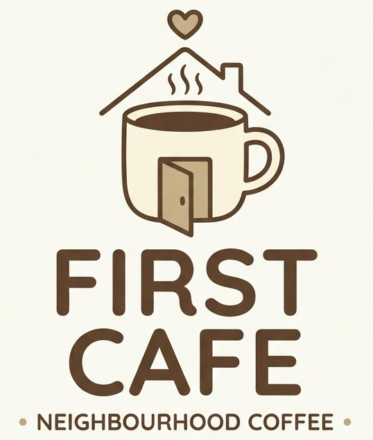
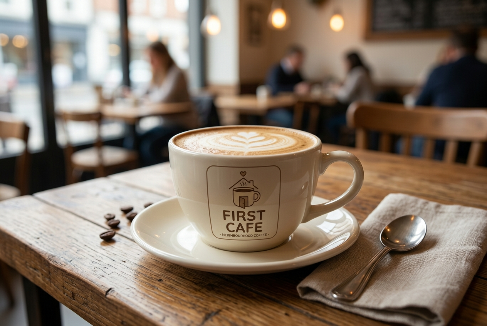
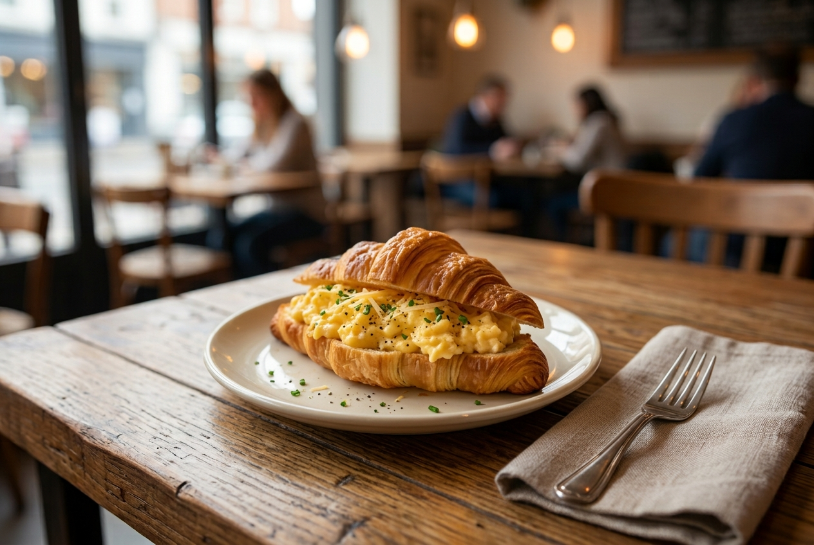
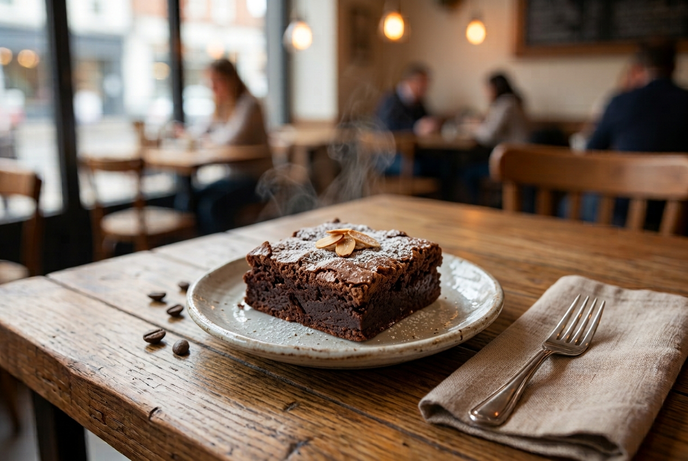

First Cafe — Tiong Bahru
21 Cosy Lane, Tiong Bahru,
Singapore 000001
Opening hours
Mon–Fri: 7:30am–8:00pm
Sat–Sun & PH: 8:00am–9:00pm
Mon–Fri: 7:30am–8:00pm
Sat–Sun & PH: 8:00am–9:00pm


Neighbourhood coffee · everyday comfort
Good coffee, comforting food and friendly service — just around the corner.
A little everyday ritual
Welcome to First Cafe, a warm and cosy neighbourhood spot where good coffee, comforting food and friendly service come together. Drop by for a quick breakfast, an easy lunch, an afternoon treat or simply a quiet cup of coffee.

About us
First Cafe was created with one simple idea: a good neighbourhood cafe should feel familiar, comfortable and easy to enjoy. We serve straightforward food and drinks made for everyday life, whether you are starting your morning, meeting a friend, taking a lunch break or enjoying a quiet moment on your own.
With three convenient outlets, First Cafe aims to be the kind of place you are always happy to return to.
Meet your local First Cafe →Locations
21 Cosy Lane, Tiong Bahru,
Singapore 000001
8 Neighbourhood Walk, Bishan,
Singapore 000002
35 Morning Street, Tampines,
Singapore 000003

Contact us
Have a question, feedback or a group enquiry? Send us a message and our team will get back to you as soon as possible.